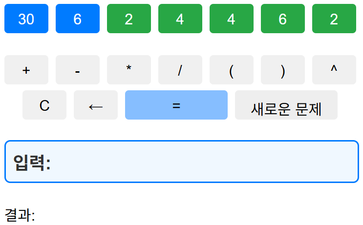

녹색 버튼을 사용하여 파란색 버튼의 합을 만들어야합니다.
위 그림의 경우 2, 4, 4, 6, 2를 이용해서 36을 만들면 됩니다.
예) 4*4*2+6-2=36
6^(2+(4-4)*2)=36
6*(4^2/4+2)=36
"초급"은 모든 버튼을 사용하지 않아도 됩니다.
"중급"은 모든 버튼을 사용해야하며 숫자는 초급과 마찬가지로 1~6까지의 숫자가 나옵니다.
"고급"은 숫자가 1~9까지 나옵니다.
만약 문제가 해결되지 않으면 [새로운 문제]를 클릭해서 다른 문제를 풀어보세요.
닫기